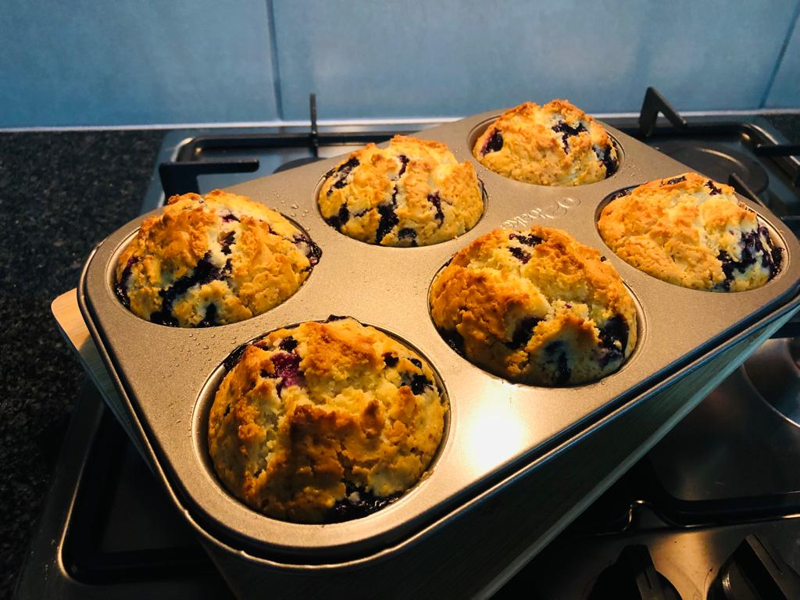

Blueberry Muffin

Very delicious blueberry muffins yummy
Ingredients
- 1 cup milk
- 1 large egg
- 1/3 cup vegetable oil
- 2 cups all purpose flour
- 2 teaspoons baking powder
- 1/2 cup white sugar
- 1/2 cup fresh blueberries
Steps
- Preheat the oven to 400 degrees F (200 degrees C). Line a 12-cup muffin tin with liners.
- Stir together milk, egg, and oil in a large bowl. Add flour, baking powder, sugar, and blueberries; gently mix the batter with only a few strokes. Spoon batter into the muffin tin.
- Bake in the preheated oven until a toothpick inserted into the center comes out clean, about 20 minutes. Serve hot.
HOME